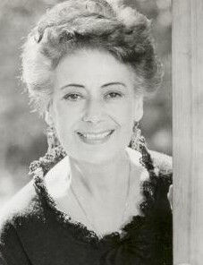
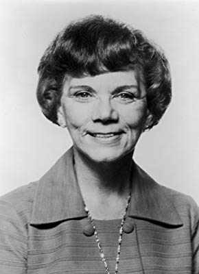
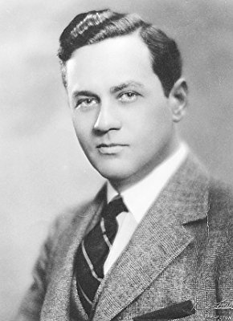

#2848 Ist das Leben nicht schön?
Alternativ: It's a Wonderful Life
Auszeichnungen: für 5 Oscars nominiert 1 GoldenGlobes gewonnen

 IMDB-Wertung: 8.6 / 10
IMDB-Wertung: 8.6 / 10  IMDB-TOP-Platzierung: 25
IMDB-TOP-Platzierung: 25  Metascore: 89
Metascore: 89 
Am stillen Weihnachtsabend in der Kleinstadt Bedford Falls ist George Bailey James Stewart drauf und dran, Selbstmord zu verüben. George ist Inhaber einer kleinen, familiär geführten Bank, die vielen weniger gut verdienenden Familien ein eigenes Häuschen finanziert. Durch ein Missgeschick ging eine große Summe verloren und George hat nun eine Klage wegen Veruntreuung am Hals. Kläger ist der wohlhabende Mr. Potter Lionel Barrymore, dem Georges Menschenfreundlichkeit schon lange ein Dorn im Auge war. Als dieser sich nun völlig verzweifelt von einer Brücke in den eiskalten Fluß stürzen will, hält ihn in letzter Sekunde ein netter, älterer Herr davon ab. Clarence ist im wahrsten Sinne des Wortes ein "rettender Engel", der George an diesem Weihnachtsabend wieder neuen Lebensmut gibt.
Jahr: 1946
Dauer: 130 Minuten
FSK: 6
Land: USA Studio: An RKO Radio ReleaseTonspuren:
Untertitel: Deutsch,
Auflösung: 1080p (1440x1080) Größe: 6574 MB
Genre: Drama, Fantasy, Familie, Weihnachten
Regisseur:  Frank Capra
Frank Capra
Drehbuch: Frances Goodrich, Albert Hackett, Frank Capra, Jo Swerling, Philip Van Doren Stern
Soundtrack: Dimitri Tiomkin
Darsteller:
 James Stewart als George Bailey
James Stewart als George Bailey Donna Reed als Mary Hatch
Donna Reed als Mary Hatch- Lionel Barrymore als Mr. Potter
 Thomas Mitchell als Uncle Billy
Thomas Mitchell als Uncle Billy- Henry Travers als Clarence
- Beulah Bondi als Mrs. Bailey
 Frank Faylen als Ernie
Frank Faylen als Ernie Ward Bond als Bert
Ward Bond als Bert- Gloria Grahame als Violet
 H.B. Warner als Mr. Gower
H.B. Warner als Mr. Gower- Frank Albertson als Sam Wainwright
-  Argentina Brunetti als Mrs. Martini
- Sheldon Leonard als Nick
 Frank Hagney als Potter's Bodyguard
Frank Hagney als Potter's Bodyguard- Ray Walker als Joe - Luggage Shop
 Charles Lane als Real Estate Salesman
Charles Lane als Real Estate Salesman- Jimmy Hawkins als Bailey Child - Tommy
 Lane Chandler als (uncredited
Lane Chandler als (uncredited- Michael Chapin als Young George's Friend , uncredited
-  Ellen Corby als Ms. Davis , uncredited
- Charles Halton als Carter , uncredited
- Carl 'Alfalfa' Switzer als Freddie Othello , uncredited
- Todd Karns als Harry Bailey
- Samuel S. Hinds als Pa Bailey
- Mary Treen als Cousin Tilly
- Virginia Patton als Ruth Dakin
- Charles Williams als Cousin Eustace
- Sarah Edwards als Mrs. Hatch
- William Edmunds als Mr. Martini
- Lillian Randolph als Annie
- Robert J. Anderson als Little George
- Ronnie Ralph als Little Sam
- Jean Gale als Little Mary
- Jeanine Ann Roose als Little Violet
- Danny Mummert als Little Marty Hatch
- Georgie Nokes als Little Harry Bailey
- Edward Keane als Tom - Bldg. & Loan
- Carol Coombs als Bailey Child - Janie
- Karolyn Grimes als Bailey Child - Zuzu
- Larry Simms als Bailey Child - Pete
- Ernie Adams als Ed , uncredited
- Monya Andre als (uncredited
 Stanley Andrews als Mr. Welch , uncredited
Stanley Andrews als Mr. Welch , uncredited-  Sam Ash als Nervous Banker , uncredited
- Jack Bailey als One of Vi's Suitors , uncredited
- Mary Bayless als Townswoman , uncredited
- Beth Belden als (uncredited
- Brooks Benedict als Military Officer in Montage , uncredited
- Joseph E. Bernard als Townsman , uncredited
 Al Bridge als Sheriff , uncredited
Al Bridge als Sheriff , uncredited
Datei: X:\1900-1949\Ist das Leben nicht schön (1946, FSK6, 1440x1080).mkv seit 25.12.2015
Festplatte: HD 1900-1970
 Es gibt insgesamt 80 Filme in der Gruppe '1900-1949'
Es gibt insgesamt 80 Filme in der Gruppe '1900-1949'